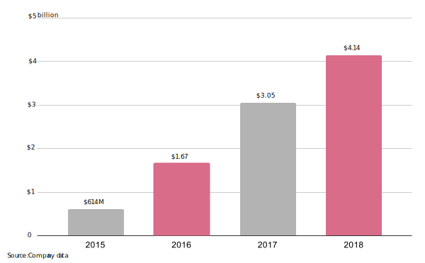

Size of segments based on revenue in first three quarters of 2019
All boxes together represent $3 billion, Nvidia's total revenue for 2019.

Gaming leads revenue but data center segment leads growth.
Looking to the future, the graphic-cards company restructures its business
Nvidia, a Silicon Valley chipmaker known for gaming graphic cards, is redirecting its path to bet on artificial intelligence.
Nvidia generates more than half its revenue by selling graphics processing units (GPUs) to gaming device manufacturers like Nintendo and PC gamers. But growth in its core gaming division is stalling as gamers shift to streaming and new competitors like Google enter the market. Gaming revenue grew just 13% to $6.2 billion from 2017 to 2018, compared to 36% growth the prior year over year.
But today Nvidia is more than just a gaming company. It has re-engineered its GPUs to support data processing at large enterprises, supercomputers that specialize in deep learning algorithms, robot simulations and—most important—self-driving cars. These technologies are part of the data center segment that forms a small but growing piece of Nvidia’s business. From 2017 to 2018, that segment grew 51%, to $6.9 billion, a rate almost four times as fast as gaming.
All boxes together represent $3 billion, Nvidia's total revenue for 2019.
“Nvidia is going in a different route,” said Romeo Alvarez, analyst at the investment firm William O’ Neil. “I think they are taking a complete view of both hardware and software, but what really differentiates them is the software.”
Nvidia CEO Jensen Huang’s vision of capitalizing on AI not only excites investors but is also backed by retail customers. That trust in Nvidia’s blueprint has moved the company’s stock price to $206.04, up over 50% this year.
A year ago, Niyant Dave, a master’s degree student in Northeastern University’s data analytics program, was in the market for a laptop.
For machine learning, a desktop PC is preferred. But “I thought if I had a good laptop, I would still be able to work with big data in less time,” said Dave.
He bought a Dell G7, which runs on Nvidia flagship GPU. “Then I came to know my professors had three strong computers assembled from Nvidia,” said Dave. Thanks to the expanding market for high GPUs in deep learning, Nvidia's data center segment recorded sales for all four computers.
Nvidia GPUs reign supreme in the AI training market, but only in recent years has the company made inroads into this domain. This transformation into an AI-first company resurrected it from the cryptocurrency rut that crashed its fourth-quarter 2018 revenue.
Automotive was one segment that grew more after the crypto bust than before. Nvidia reported $537 million in sales for automotive through the first nine months of this year, 12% more than the same period a year earlier.
Pickup in gaming wasn’t as strong. That sector rebounded to $4 billion in the first nine months of this fiscal year but remained below the $5 billion it hit in the same period last year.
Autonomous, a part of its auto segment, will see growth, according to Shebly Seyrafi, analyst at FBN Securities, because of new partnerships like the one with the Volvo Group, which is developing a line of self-driving trucks using Nvidia’s technology.

The step back comes at a time when the gaming segment has new competitors and has started to evolve.
Much like TV and movies, the video-game industry has shifted to streaming in recent years.
To cater to this need, Nvidia launched GeForce Now, a cloud-gaming platform, in the beta, or trial, version two years ago. But even as competition intensified in 2019 and a dizzying number of companies, including Google, jumped into the gaming market, GeForce Now remains in beta mode. In fact, Nvidia started to remove games from its platform, a move that has agitated some gamers.
Adding to that, gaming consoles like Nintendo Switch that are powered by Nvidia’s Tegra chips didn’t update their technology in 2019, Alvarez said.
In response to inquiries around the use of AI and performance of the cloud gaming service, Nvidia pointed to a note by its CFO Colette Kress that said GeForce Now had made progress through partnerships with new service providers. The company did not comment on its AI strategy.
Nvidia executives in the recent earnings call said that it sees future growth thanks to EGX Edge, its software for enterprises to perform the second step in machine learning, known as data inferencing "at the edge." This means that for early adopters like Walmart and BMW, analyses are performed where the data is being collected, and not in faraway locations.
One of Nvidia’s key competitors, AMD, has not experienced the growth Nvidia has on the stock market; Nvidia’s 50-day moving average of $200.63 is six times AMD’s $34.63. But AMD is not as involved with AI, either.

Sealing its AI strategy, Nvidia announced the acquisition of the data-connectivity company Mellanox Technologies (MLNX) in March this year. The deal was expected to close by the end of the year, but both Mellanox and Nvidia make about 25% of their sales in China, and Chinese regulators have yet to approve.
Last year, a similar deal between Qualcomm, a telecommunications-equipment firm, and NXP Semiconductors was called off because of China’s inaction amid the trade war.
Each box represents $23.4 million
Regardless of whether the $7 billion Mellanox deal goes through, Nvidia won’t see an impact if it continues pumping its AI expertise into various sectors like health care, auto, and retail. It has kept investors waiting to see which sector it deals with next, so until the market shows trust in the future potential of deep learning, Nvidia’s AI strategy will pay off.
In terms of the long-term outlook, AI and the internet of things (IoT) such as simulators will drive positive growth for Nvidia, said Woo Jin Ho, a Bloomberg Intelligence analyst.